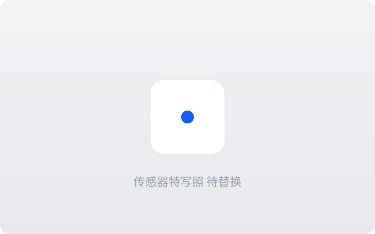
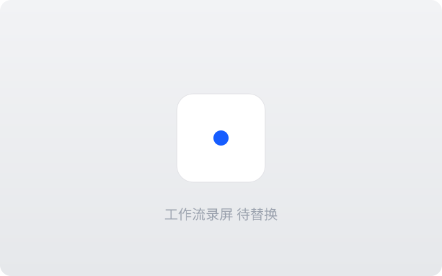

真实传感器数据
不靠画面猜测，
靠物理数据重建运动
高频陀螺仪与加速度计记录相机的每一次真实运动，稳定不再依赖画面分析 —— 弱光、快门残影、大幅度运动下依然精准。

极简工作流
拖入，即稳定
素材与陀螺仪数据自动匹配、自动同步，一键完成稳定。整卡素材批量处理，无需逐条设置。
更多能力
专业格式无损
BRAW、R3D、N-RAW、ProRes、DNG 序列与各家 Log，10-bit / 12-bit 全程保留，GPU 加速渲染。
NLE 插件集成
DaVinci Resolve 与 Adobe Premiere Pro 插件，原片直接进时间线，稳定参数在剪辑软件内实时调整。
广泛相机支持
Sony、Canon、Nikon、RED、Panasonic 等主流品牌。查看完整列表
画质无损稳定
对比机内电子防抖：裁切更少、无果冻效应、锐度不受损。
创意稳定功能
地平线锁定、竖拍、变宽镜头、升格素材，都能稳。
全平台
Windows、macOS、Android 全覆盖，工作流不受设备限制。